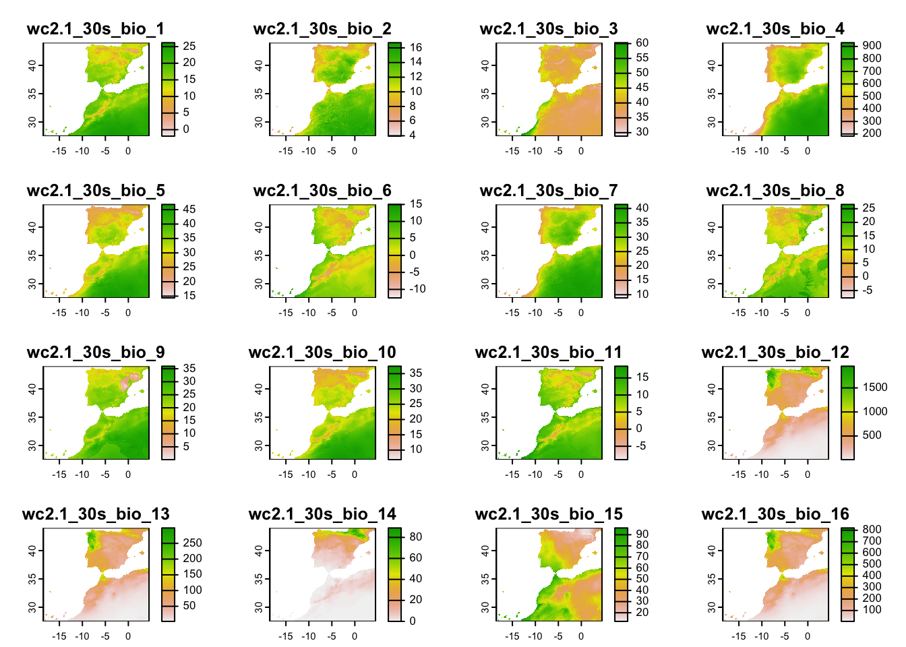
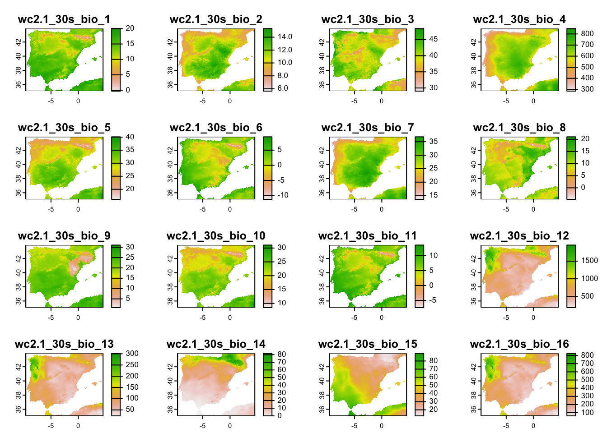
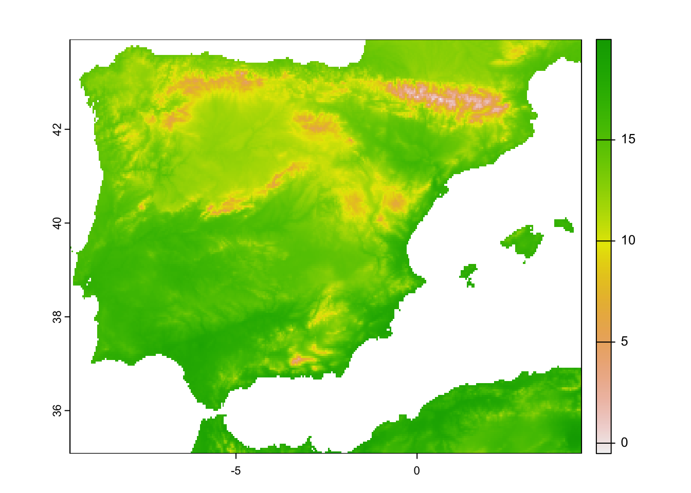

Environmental data in R
RStudio project
Open the RStudio project that we created in the previous session. I recommend to use this RStudio project for the entire module and within the RStudio project create separate R scripts for each session.
- Create a new empty R script by going to the tab “File”, select “New File” and then “R script”
- In the new R script, type
# Session Occ-3: Environmental data in Rand save the file in your folder “scripts” within your project folder, e.g. as “Occ3_EnvData.R”
In species distribution and occupancy modelling, we aim to understand how species’ occurrence are related to environment. Thus, additional to our species data, we need environmental information. Many environmental data are now available at very high spatial resolution, e.g. lidar data (Bakx et al. 2019). However, often, high resolution data are not necessarily available globally - although the data are constantly improving. I can’t give you a full overview over all available data sets. Rather, you should get an idea how you process the data to make best use of them for your occupancy models.
We will stick to our previous example of red kite in Spain, for which we prepared data at a 2.5 minute (roughly 5 km) spatial resolution.
1 Elevation data
We have already downloaded elevation data using the
geodata package in the previous practical. Elevation is
often used in occupancy models as proxy for environmental gradients.
# Get elevation data for Spain. This time without masking!
library(geodata)
elev_Esp_1km <- geodata::elevation_30s(country='ESP', path='data', mask=F)
# Aggregate to ca. 5km resolution
elev_Esp_5km <- terra::aggregate(elev_Esp_1km, fact=5)
plot(elev_Esp_5km)# write to file:
terra::writeRaster(elev_Esp_5km,filename='data/elev_Esp_5km.tif')2 Climate data
The geodata package is offering direct access to some
standard repositories; see the help pages ?geodata.
We have already used this for extracting climate data from the worldclim database (http://worldclim.org/). Please note that there are different climate data sets out, e.g. the Chelsa climatologies (http://chelsa-climate.org/) that use a different downscaling algorithm and are preferable in heterogeneous terrain (Karger et al. 2017).
We download the 19 bioclimatic variables provided at 30 second
resolution and aggregate them to the desired 2.5 minutes resolution. The
variables are indicated by var="bio". For an explanation of
the 19 bioclimatic see here: https://www.worldclim.org/data/bioclim.html. (Note that
Chelsa climatologies offer the same set of 19 bioclim variables.) Other
valid variable names are ‘tmin’, ‘tmax’ and ‘prec’. See the
?getData help pages for more information. You can download
global climate data (function worldclim_global()) or
climate data for a specific tile (function worldclim_tile()
- tiles come at 30 x 30 degree spatial extent). Here, we are going to
download climate data for a specific country.
library(terra)
# Download global bioclimatic data from worldclim (you may have to set argument 'download=T' for first download, if 'download=F' it will attempt to read from file):
clim_1km <- geodata::worldclim_country(country='ESP', var = 'bio', download = F, path = 'data')
# Now, let's look at the data:
clim_1km## class : SpatRaster
## dimensions : 1980, 2760, 19 (nrow, ncol, nlyr)
## resolution : 0.008333333, 0.008333333 (x, y)
## extent : -18.5, 4.5, 27.5, 44 (xmin, xmax, ymin, ymax)
## coord. ref. : lon/lat WGS 84 (EPSG:4326)
## source : ESP_wc2.1_30s_bio.tif
## names : wc2.1~bio_1, wc2.1~bio_2, wc2.1~bio_3, wc2.1~bio_4, wc2.1~bio_5, wc2.1~bio_6, ...
## min values : -2.120833, 2.816667, 27.84268, 177.0144, 14.2, -12.6, ...
## max values : 26.387501, 16.833334, 60.56201, 931.0112, 47.1, 17.1, ...terra::plot(clim_1km)
# The climate data are provided within a larger spatial extent than the elevation data, and we thus crop them
clim_1km_Esp <- terra::crop(clim_1km, elev_Esp_1km)
# Aggregate to 2.5 min spatial resolution
clim_5km_Esp <- terra::aggregate(clim_1km_Esp, fact=5)
# Plot the climate data
terra::plot(clim_5km_Esp)
2.1 Future climate scenarios
The Chelsa and worldclim data bases also offer downscaled climate
scenarios. The scenarios stem from the World Climate Research Programme
Coupled Model Intercomparison Projects (CMIPs). The most recent is the
CMIP6 and the corresponding scenarios can be downloaded form the Chelsa
or worlclim websites. For the latter, the downscaled climate scenarios
are again accessible through the geodata package
(?geodata::cmip6_world). In the function
geodata::cmip6_world(), we have to indicate which
model (global circulation model, GCM) we want to download,
which ssp (shared
socioeconomic pathway, SSP) and which time period
(projection period; e.g., 2041-2060). More information on the model
abbreviations and the available SSPs can be found here: https://www.worldclim.org/data/cmip6/cmip6_clim10m.html.
As above, we have to provide var and res
arguments as well. Again, you can download global climate scenarios
(function cmip6_world()) or climate scenarios for a
specific spatial tile (function cmip6_tile()). Tiles are
provided as 30 x 30 degree spatial windows.
# Download future climate scenario from 'ACCESS-ESM1-5' climate model.
# Please note that you have to set download=T if you haven't downloaded the data before:
clim_fut_5km <- geodata::cmip6_world(model='ACCESS-ESM1-5', ssp='245', time='2041-2060', var='bioc', download=F, res=2.5, path='data')
# Crop to same extent as current climate
clim_fut_5km_Esp <- terra::crop(clim_fut_5km, clim_5km_Esp)
# Inspect and map the SpatRaster object:
clim_fut_5km_Esp## class : SpatRaster
## dimensions : 212, 339, 19 (nrow, ncol, nlyr)
## resolution : 0.04166667, 0.04166667 (x, y)
## extent : -9.583333, 4.541667, 35.08333, 43.91667 (xmin, xmax, ymin, ymax)
## coord. ref. : lon/lat WGS 84 (EPSG:4326)
## source(s) : memory
## names : wc2_1, wc2_2, wc2_3, wc2_4, wc2_5, wc2_6, ...
## min values : 2.9, 3.4, 27.8, 222.1, 21.0, -9.5, ...
## max values : 23.1, 15.9, 47.6, 900.7, 43.7, 13.0, ...plot(clim_fut_5km_Esp)
We see that the current and future climate SpatRaster
objects have different layer names. This could cause problems in
occupancy modelling and we thus want make sure that they all have the
same layer names.
# Inspect layer names
names(clim_1km_Esp)## [1] "wc2.1_30s_bio_1" "wc2.1_30s_bio_2" "wc2.1_30s_bio_3" "wc2.1_30s_bio_4"
## [5] "wc2.1_30s_bio_5" "wc2.1_30s_bio_6" "wc2.1_30s_bio_7" "wc2.1_30s_bio_8"
## [9] "wc2.1_30s_bio_9" "wc2.1_30s_bio_10" "wc2.1_30s_bio_11" "wc2.1_30s_bio_12"
## [13] "wc2.1_30s_bio_13" "wc2.1_30s_bio_14" "wc2.1_30s_bio_15" "wc2.1_30s_bio_16"
## [17] "wc2.1_30s_bio_17" "wc2.1_30s_bio_18" "wc2.1_30s_bio_19"names(clim_5km_Esp)## [1] "wc2.1_30s_bio_1" "wc2.1_30s_bio_2" "wc2.1_30s_bio_3" "wc2.1_30s_bio_4"
## [5] "wc2.1_30s_bio_5" "wc2.1_30s_bio_6" "wc2.1_30s_bio_7" "wc2.1_30s_bio_8"
## [9] "wc2.1_30s_bio_9" "wc2.1_30s_bio_10" "wc2.1_30s_bio_11" "wc2.1_30s_bio_12"
## [13] "wc2.1_30s_bio_13" "wc2.1_30s_bio_14" "wc2.1_30s_bio_15" "wc2.1_30s_bio_16"
## [17] "wc2.1_30s_bio_17" "wc2.1_30s_bio_18" "wc2.1_30s_bio_19"names(clim_fut_5km_Esp)## [1] "wc2_1" "wc2_2" "wc2_3" "wc2_4" "wc2_5" "wc2_6" "wc2_7" "wc2_8"
## [9] "wc2_9" "wc2_10" "wc2_11" "wc2_12" "wc2_13" "wc2_14" "wc2_15" "wc2_16"
## [17] "wc2_17" "wc2_18" "wc2_19"# Overwrite all climate layer names (Careful, you should only do this when you are certain that all variables are ordered in the same way)
names(clim_1km_Esp) <- names(clim_5km_Esp) <- names(clim_fut_5km_Esp) <- paste('bio',1:19,sep='_')You can also write SpatRaster objects to file. Here, we
save the SpatRaster objects in a GeoTiff:
terra::writeRaster(clim_5km_Esp,filename='data/bioclim_ESP_5km.tif')
terra::writeRaster(clim_fut_5km_Esp,filename='data/bioclim_fut_ESP_5km.tif')Exercise:
- Take a look at available scenarios and download data for two other GCMs, SSPs, and time periods: https://www.worldclim.org/data/cmip6/cmip6_clim10m.html
3 Land cover data
The geodata package also offers access to other
environmental data useful for species distribution modelling, for
example soil (?geodata::soil_world) and land cover data
(?geodata::landcover).
The land cover data are derived from the ESA WorldCover data set (https://esa-worldcover.org/en) that “provides a new
baseline global land cover product at 10 m resolution for 2020 based on
Sentinel-1 and 2 data”. The geodata package offers the
fractional cover at 30-seconds spatial resolution (c. 1 km at the
equator). For illustration, let`s download tree cover globally.
# Download fractional tree cover at 30-sec (roughly 1 km) resolution:
# Please note that you have to set download=T if you haven't downloaded the data before:
trees_1km <- geodata::landcover(var='trees', path='data', download=F)
# Crop to study area extent
trees_1km_Esp <- terra::crop(trees_1km, elev_Esp_1km)
# map the tree cover
plot(trees_1km_Esp)
Above, we used climate data at 2.5-min (roughly 5 km) spatial
resolution. To obtain the same spatial resolution for the land cover, we
have to aggregate the SpatRaster object.
# Aggregate tree cover to 2.5-min spatial resolution (roughly 5 km)
trees_5km_Esp <- terra::aggregate(trees_1km_Esp, fact=5, fun='mean')
# Map the 2.5-min tree cover (roughly 5 km)
plot(trees_5km_Esp)# Save to file
terra::writeRaster(trees_5km_Esp,filename='data/trees_ESP_5km.tif')Now that our tree cover data and climate data are at the same spatial resolution, we can stack them into a multi-layer object.
# Produce the multi-layer environmental data object:
env_cur_Esp <- c(elev_Esp_5km, clim_5km_Esp, trees_5km_Esp)4 Joining species and environmental data
Last, we can join our species and environmental data. Such joined species-environment data later serve as input to our species distribution models.
# Load our previously saved red kite data:
load(file='data/redkite_det_Esp_2022_wide.RData')When we have coordinate data, as we have in the eBird data of the red
kite, we can use these coordinates to “pierce” through
SpatRaster layers. That’s one of the easiest ways to
extract relevant environmental data for our species records.
# We can extract the environmental data for the red kite coordinates.
# Coordinates are always provided as x/y format, in our case lon/lat.
head(terra::extract(x = env_cur_Esp,
y = data.frame(redkite_det_Esp_2022_wide[,c('x','y')])))## ID ESP_elv bio_1 bio_2 bio_3 bio_4 bio_5 bio_6 bio_7 bio_8
## 1 1 873.60 12.48100 12.44867 40.39612 652.8463 30.260 -0.556 30.816 14.252000
## 2 2 49.76 17.61467 10.27800 42.05346 505.6223 31.052 6.612 24.440 12.627333
## 3 3 757.20 15.28933 13.04867 41.30411 651.4901 33.580 1.988 31.592 8.796667
## 4 4 11.96 18.62383 11.62433 41.09237 588.1969 34.452 6.164 28.288 12.606667
## 5 5 519.84 15.57117 13.56100 41.67480 662.7516 34.684 2.144 32.540 8.912000
## 6 6 632.68 14.57117 11.65033 37.61579 689.9860 32.448 1.476 30.972 10.459333
## bio_9 bio_10 bio_11 bio_12 bio_13 bio_14 bio_15 bio_16 bio_17
## 1 6.062667 21.03600 5.152000 395.16 52.40 20.12 30.81702 134.12 70.40
## 2 23.904667 24.12467 11.747333 483.24 84.36 2.00 69.50433 232.60 18.04
## 3 23.770667 23.77067 7.942000 412.24 57.00 3.04 53.32369 161.84 24.96
## 4 26.039333 26.18200 11.786667 536.20 93.72 2.00 67.06034 252.28 22.20
## 5 24.104667 24.17133 8.049333 629.84 102.32 5.00 60.55848 277.36 34.04
## 6 23.452000 23.60667 6.808000 366.16 44.76 11.00 35.85765 122.96 48.56
## bio_18 bio_19 trees
## 1 85.24 77.24 0.849488
## 2 21.04 205.48 0.650424
## 3 24.96 153.36 0.217108
## 4 27.12 223.76 0.088260
## 5 37.20 250.72 0.015780
## 6 52.60 101.68 0.013248# Finally, we put species and environmental data into the same data frame:
redkite_det_env_Esp_2022 <- cbind(redkite_det_Esp_2022_wide, terra::extract(x = env_cur_Esp, y = data.frame(redkite_det_Esp_2022_wide[,c('x','y')])))We now have to inspect the data again to see whether we have any missing values or any other issues.
summary(redkite_det_env_Esp_2022)
# remove missing values:
redkite_det_env_Esp_2022 <- na.exclude(redkite_det_env_Esp_2022)Don’t forget to save your data.
save(redkite_det_env_Esp_2022, file='data/redkite_det_env_Esp_2022.RData')5 Homework prep
For today’s homework, you should already have saved all objects that are needed.
# terra objects already saved to file: "elev_Esp_5km.tif", "clim_5km_Esp" (saved as "bioclim_ESP_5km.tif"), "clim_fut_5km_Esp" (saved as "bioclim_fut_ESP_5km.tif"), "trees_5km_Esp.tif"
# other (non-terra) objects from the workspace already saved to file: "redkite_det_env_Esp_2022.RData"As homework, solve all the exercises in the blue boxes.
Exercise:
- Take your own bird species that you chose in Practical Occ-2 and think about which environmental variables could be important for explaining the species occurrence.
- Download at least one other land cover class that you deem important for your species, crop to the country or study region of your eBird data and aggregate to the appropriate spatial resolution.
- Should you have chosen a different country than Spain, also crop the climate and elevation data to this new study region.
- Make a multi-layer
SpatRasterobject combining all environmental data (elevation, climate, land cover) as we did for the red kite (env_cur_Esp). Write this object to file as GeoTIFF. - Merge all environmental data with the species data from practical Occ-2 and save to file.